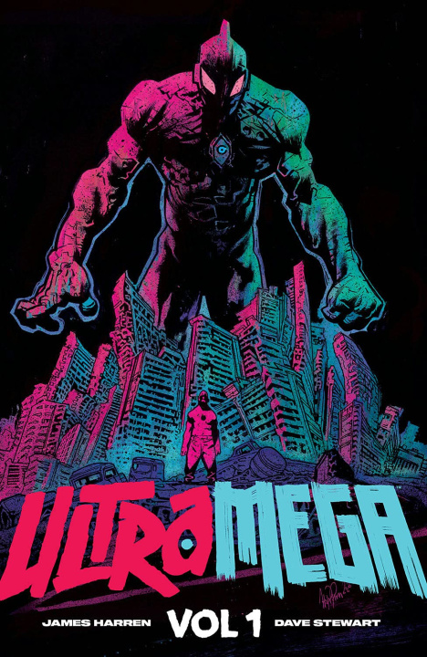

James Harren (käsikirjoitus & kuvitus), Dave Stewart (väritys) | Image Comics / Skybound, 2021–2024 | 2 albumia (#1–4 ja #5–9)

James Harren on piirtäjä, jonka jokainen sivu näyttää siltä kuin se olisi syntynyt jonkinlaisessa hallitussa räjähdyksessä. Hänet tunnetaan Rumblesta ja BPRD-töistään Mike Mignolan universumissa, mutta Ultramega on hänen oma juttunsa — kirjoitettu, piirretty ja omistettu kokonaan yhdelle visiolle. Ja se visio on: kaikki räjähtää, kaikki vuotaa verta, ja kaikki on uskomattoman hienon näköistä.
Premissi on tuttu sentai- ja kaijugenren ystäville. Kosminen rutto leviää maapallolla ja muuttaa tavallisia ihmisiä hirviömäisiksi kaijuiksi. Kolme ihmistä — Ultramegat — saavat voimat taistella niitä vastaan. Ensimmäinen albumi kertoo heidän taistelunsa ja epäonnistumisensa. Toinen siirtyy eteenpäin ajassa maailmaan, jossa kaijut ovat voittaneet ja uusi Ultramega, Noah, nousee tuhkan keskeltä.
Taide on tämän sarjan syy olla olemassa
Puhutaan ensin siitä, mikä tekee Ultramegasta poikkeuksellisen: James Harrenin taide. Jokaisella sivulla on energiaa, jota ei voi selittää sanoin. Taistelut ovat massiivisia, hirviödesignit mielikuvituksellisia ja väkivalta niin yliampuvaa, että se muuttuu omaksi estetiikakseen. Dave Stewartin väritys — Stewart on useamman Eisner-palkinnon voittanut veteraani — tuo kaikkeen syvyyttä ja tunnelmaa, joka vaihtelee ydinräjähdysten oransseista syvänmeren sinisiin.
Harren piirtää toimintaa tavalla, joka on samanaikaisesti kaoottista ja hallittua. Sivuasetelmat hajoavat ja muotoutuvat uudelleen taistelun rytmin mukaan. Ruutujen rajat murtuvat. Perspektiivi vääristyy. Kaikki tämä on tahallista. Harren tietää tarkalleen mitä tekee, ja lopputulos on sarjakuvaa, joka käyttää mediansa mahdollisuuksia tavalla, johon animaatio tai elokuva ei pysty.
Vuoristorata, jossa opastetaulut puuttuvat
Mutta. Tarina.
Ultramega ei ole helppo luettava. Se ei ole vaikea siinä mielessä, että se vaatisi erityistä älyllistä ponnistelua — vaan siinä mielessä, että sarjan suunta ja rytmi muuttuvat jatkuvasti. Ensimmäinen albumi rakentaa maailman ja henkilöhahmot, mutta toinen albumi hyppää ajassa eteenpäin, vaihtaa näkökulmaa ja laajentaa skaalaansa tavalla, joka vaatii lukijalta aktiivista mukana pysymistä.
Ensimmäisellä lukukerralla kokemus on kuin vuoristoradan kyydissä. Sivuja kääntyy, taistelut vyöryvät yli, hirviöt ilmestyvät ja kuolevat, ja lukijana yrität lähinnä pysyä perässä siinä mitä juuri tapahtui. Tämä ei ole välttämättä ongelma, mutta se on hyvä tiedostaa etukäteen. Ultramega palkitsee uudelleenlukemisen. Kun tietää minne tarina on menossa, pystyy nauttimaan yksityiskohdista, joita ensimmäisellä kerralla ei ehtinyt huomata.
Toisen albumin rakenteelliset valinnat — aikahypyt, uudet hahmot, laajempi kosminen mittakaava — ovat kunnianhimoisia mutta tekevät kokonaisuudesta paikoin raskaan. Kaikki eivät laskeudu täydellisesti. Mutta Harren on sen tyyppinen tekijä, jolle antaa mielellään anteeksi tarinan epätasaisuudet, koska jokainen sivu on visuaalisesti niin palkitseva.
Väkivallasta
Ultramega on erittäin väkivaltainen sarjakuva. Tämä ei ole koristeellista väkivaltaa tai tyyliteltyä toimintaa. Tämä on sisäelimiä, repeytyviä raajoja ja verta joka suunnasta. Image Comicsin M-ikäluokitus on ansaittu moneen kertaan.
Mutta väkivalta ei ole itsetarkoituksellista. Se on osa maailmaa, jossa kaijujen ja Ultramegan väliset taistelut tasoittavat kokonaisia kaupunkeja. Mittakaava vaatii väkivallan — ja Harren piirtää sen rehellisesti, ilman pehmentelyä. Jos tämä ei ole sinun juttusi, Ultramega ei ole sinun sarjakuvasi. Jos taas nautit Invinciblen taistelukohtauksista tai Extremityn raakuudesta, olet kotonasi.
Kokonaiskaari
Yhdeksän ylisuurta numeroa. Kaksi albumia. Yksi kokonainen tarina. Tässä on jotain raikasta aikana, jolloin sarjakuvasarjat jatkuvat loputtomiin tai peruuntuvat kesken kaiken. Harren tiesi minne oli menossa, ja hän pääsi sinne — vaikka matka olikin paikoin mutkikas.
Ultramega ei ole täydellinen sarjakuva. Tarina ei aina pidä lukijasta kädestä kiinni, ja toisen albumin kunnianhimo ylittää toisinaan sen kyvyn kommunikoida selkeästi. Mutta se on rohkea, omaperäinen ja visuaalisesti häikäisevä teos tekijältä, joka teki tarkalleen sen sarjakuvan jonka halusi tehdä. Ja se näkyy jokaisella sivulla.

James Harren | Ultramega #1–9 | Image Comics / Skybound, 2021–2024
Ensimmäinen albumi kerää numerot #1–4, toinen #5–9. Molemmat saatavilla trade paperback -muodossa.